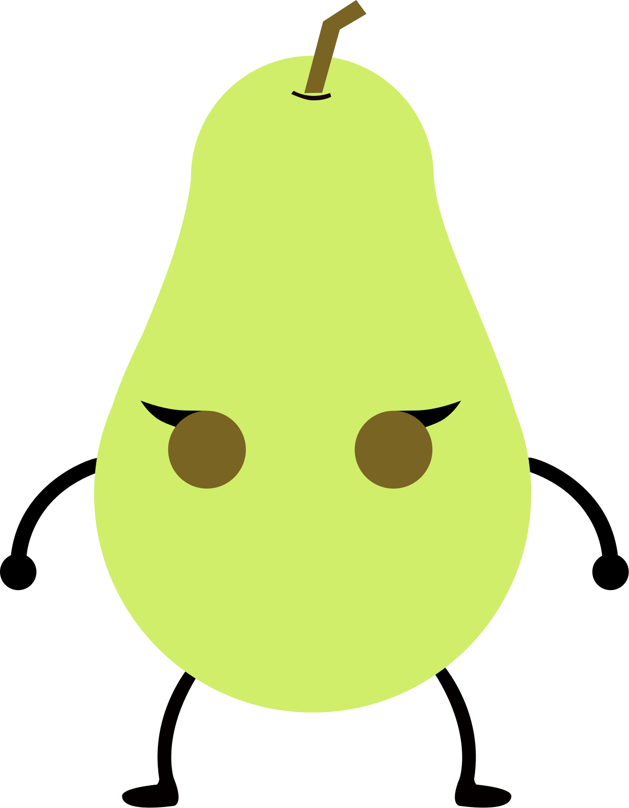

¡El mapa son diferentes partes de una cocina, empieza en una cesta y termina escapando por la ventana!
¡Los protagonistas de esta aventura son una manzana ,
la cual le
falta un brazo y una pera ! ¡Ambos buscan sobrevivir!
- Manzana
- Pera



Historia
Un hombre llamado Juan acaba de comprar fruta en una frutería, llega a su casa cansado después de un día duro de trabajo, coloca la cesta de la compra que tenía en una silla y se dispone a relajarse un poco con una ducha, pero antes de ello le mete un buen mordisco a la manzana, para probarla... A Juan le ha gustado mucho el sabor de la manzana, y piensa disfrutar de sus dos piezas de fruta recién acabar la ducha. Todo estaría bien, sino fuese porque la manzana se dio cuenta de su terrible destino, se percató que iba a ser devorada, y su compañera la pera también tendría un destino horrible. El mordisco le ha dejado sin brazo a la manzana, al querer conservar sus vidas necesitan escapar juntos, y descubrieron que en la cocina había una ventana que reflejaba su libertad, por lo tanto debes de ayudar a que estas dos frutas salven su vida escapando de la cocina antes de que el humano acabe su ducha, ¡Hay diferentes niveles de dificultad! ¡Cuanto más difícil, más rápida es la ducha de Juan!